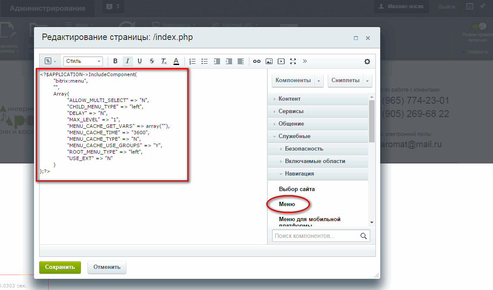

Меню навигации на сайте создаётся в пункте настрока - настройка модулей - управление структурой
Именуем тип меню и сохраняем
Переходим на сайт и в режиме правки копируем код меню
Скопированый код меню вставляю в шаблон всего сайта или в раздел страницы где нужно меню
Создаём разделы для каждого пункта меню по макету
Далее произвожу стилизацию путем подстановки классов из готовой верстки макета в код PHP меню так как стили компонента не подходят под макет
При включенном режиме правки активируем меню для редактирования меню шаблона компонента
Определяем настройки компонента, указываем размещение в нужной папке
И прописываем нужные классы, приводим к нужному нам виду боковое меню